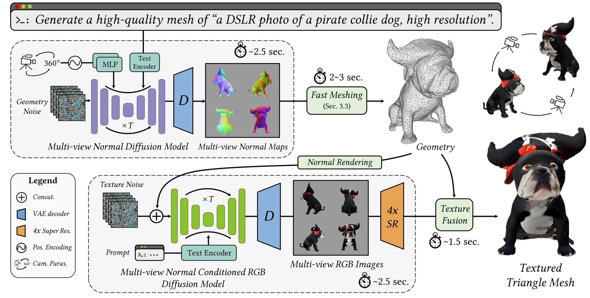

TL;DR: Diverse, Janus-free, and high-fidelity 3D content generation in only 10 seconds.
Results Gallery. Given text prompts as description input, our method outputs high-quality textured triangle mesh in only 10 seconds. The generated multi-view normal and RGB images are shown beside the rendered models.
Prompts for the above left column results are R1) a baby bunny sitting on top of a stack of pancakes, R2) a beautiful rainbow fish, R3) a DSLR photo of an astronaut standing on the surface of mars, R4) a steam engine train, high resolution, R5) a DSLR photo of a delicious croissant, and R6) a beautiful dress made out of garbage bags, on a mannequin. Studio lighting, high quality, high resolution. Prompts for the above right column results are R1) a bald eagle carved out of wood, R2) a DSLR photo of a robot tiger, R3) a DSLR photo of a teal moped, R4) a turtle standing on its hind legs, wearing a top hat and holding a cane, R5) a zoomed out DSLR photo of a marble bust of a fox head, and R6) a DSLR photo of a corgi puppy.
Abstract
Recent advances in generative AI have unveiled significant potential for the creation of 3D content. However, current methods either apply a pre-trained 2D diffusion model with the time-consuming score distillation sampling (SDS), or a direct 3D diffusion model trained on limited 3D data losing generation diversity. In this work, we approach the problem by employing a multi-view 2.5D diffusion fine-tuned from a pre-trained 2D diffusion model. The multi-view 2.5D diffusion directly models the structural distribution of 3D data, while still maintaining the strong generalization ability of the original 2D diffusion model, filling the gap between 2D diffusion-based and direct 3D diffusion-based methods for 3D content generation. During inference, multi-view normal maps are generated using the 2.5D diffusion, and a novel differentiable rasterization scheme is introduced to fuse the almost consistent multi-view normal maps into a consistent 3D model. We further design a normal-conditioned multi-view image generation module for fast appearance generation given the 3D geometry. Our method is a one-pass diffusion process and does not require any SDS optimization as post-processing. We demonstrate through extensive experiments that, our direct 2.5D generation with the specially-designed fusion scheme can achieve diverse, mode-seeking-free, and high-fidelity 3D content generation in only 10 seconds.
Pipeline

Overview of our text-to-3D content generation system. The generation is a two-stage process, first generating geoemtry and then appearance. Specifically, the system is composed of the following steps: 1) a single denoising process to simultaneously generate 4 normal maps; 2) fast mesh optimization by differentiable rasterization; 3) a single denoising process to generate 4 images conditioned on rendered normal maps; 4) texture construction from multi-view images. The whole generation process only takes 10 seconds.
Fast and Explicit Multi-view 2.5D Fusion
Our method fuses the multi-view normal images into an explicit triangle mesh via a fast meshing algorithm. The geometry optimization process via differentiable rasterization only requires only 2-3 seconds to generate a high-quality result.
Diverse Generation
Diverse Generation. Our method avoids the common mode-seeking problem by SDS and generates diverse results. Prompts for the results from top to bottom are: R1) a ceramic lion, R2) a DSLR photo of a human skull, R3) a DSLR photo of a corgi puppy, R4) a DSLR photo of a pirate collie dog, high resolution, R5) a DSLR photo of a toy robot, R6) a blue motorcycle, R7) a DSLR photo of an ice cream sundae, and R8) a zoomed out DSLR photo of a wizard raccoon casting a spell.
Geometry-Appearance Disentangled Generation
Geometry-Appearance Disentangled Generation. Prompts for the results from top to bottom are: R1) a DSLR photo of a bear dressed in medieval armor, R2) a zoomed out DSLR photo of a wizard raccoon casting a spell, R3) a DSLR photo of a robot tiger, and R4) a freshly baked loaf of sourdough bread on a cutting board.
Comparison to Previous Text-to-3D Methods
Prompts for the results from top to bottom are: R1) a zoomed out DSLR photo of a wizard raccoon casting a spell, R2) a DSLR photo of a turtle standing on its hind legs, wearing a top hat and holding a cane, R3) a DSLR photo of a pirate collie dog, high resolution, and R4) a DSLR photo of a robot tiger.
More Results
More generation results. The prompts for the results above can be found at here.